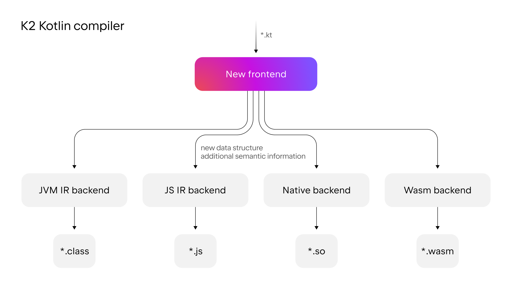

K2 编译器迁移指南
As the Kotlin language and ecosystem have continued to evolve, so has the Kotlin compiler. The first step was the introduction of the new JVM and JS IR (Intermediate Representation) backends that share logic, simplifying code generation for targets on different platforms. Now, the next stage of its evolution brings a new frontend known as K2.

With the arrival of the K2 compiler, the Kotlin frontend has been completely rewritten and features a new, more efficient architecture. The fundamental change the new compiler brings is the use of one unified data structure that contains more semantic information. This frontend is responsible for performing semantic analysis, call resolution, and type inference.
The new architecture and enriched data structure enables the K2 compiler to provide the following benefits:
- Improved call resolution and type inference. The compiler behaves more consistently and understands your code better.
- Easier introduction of syntactic sugar for new language features. In the future, you'll be able to use more concise, readable code when new features are introduced.
- Faster compilation times. Compilation times can be significantly faster.
- Enhanced IDE performance. Starting with 2025.1, IntelliJ IDEA uses K2 mode to analyze your Kotlin code, increasing stability and providing performance improvements. For more information, see Support in IDEs.
This guide:
- Explains the benefits of the new K2 compiler.
- Highlights changes you might encounter during migration and how to adapt your code accordingly.
- Describes how you can roll back to the previous version.
The new K2 compiler is enabled by default starting with 2.0.0. For more information on the new features provided in Kotlin 2.0.0, as well as the new K2 compiler, see What's new in Kotlin 2.0.0.
Performance improvements
To evaluate the performance of the K2 compiler, we ran performance tests on two open-source projects: Anki-Android and Exposed. Here are the key performance improvements that we found:
- The K2 compiler brings up to 94% compilation speed gains. For example, in the Anki-Android project, clean build times were reduced from 57.7 seconds in Kotlin 1.9.23 to 29.7 seconds in Kotlin 2.0.0.
- The initialization phase is up to 488% faster with the K2 compiler. For example, in the Anki-Android project, the initialization phase for incremental builds was cut from 0.126 seconds in Kotlin 1.9.23 to just 0.022 seconds in Kotlin 2.0.0.
- The Kotlin K2 compiler is up to 376% quicker in the analysis phase compared to the previous compiler. For example, in the Anki-Android project, analysis times for incremental builds were slashed from 0.581 seconds in Kotlin 1.9.23 to only 0.122 seconds in Kotlin 2.0.0.
For more details on these improvements and to learn more about how we analyzed the performance of the K2 compiler, see our blog post.
Language feature improvements
The Kotlin K2 compiler improves language features related to smart-casting and Kotlin Multiplatform.
智能转换
The Kotlin compiler can automatically cast an object to a type in specific cases, saving you the trouble of having to explicitly specify it yourself. This is called smart-casting. The Kotlin K2 compiler now performs smart casts in even more scenarios than before.
In Kotlin 2.0.0, we've made improvements related to smart casts in the following areas:
- Local variables and further scopes
- Type checks with the logical
oroperator - Inline functions
- Properties with function types
- Exception handling
- Increment and decrement operators
Local variables and further scopes
Previously, if a variable was evaluated as not null within an if condition, the variable would be smart-cast.
Information about this variable would then be shared further within the scope of the if block.
However, if you declared the variable outside the if condition, no information about the variable would be available
within the if condition, so it couldn't be smart-cast. This behavior was also seen with when expressions and while loops.
From Kotlin 2.0.0, if you declare a variable before using it in your if, when, or while condition, then any
information collected by the compiler about the variable will be accessible in the corresponding block for
smart-casting.
This can be useful when you want to do things like extract boolean conditions into variables. Then, you can give the variable a meaningful name, which will improve your code readability and make it possible to reuse the variable later in your code. For example:
class Cat {
fun purr() {
println("Purr purr")
}
}
fun petAnimal(animal: Any) {
val isCat = animal is Cat
if (isCat) {
// In Kotlin 2.0.0, the compiler can access
// information about isCat, so it knows that
// animal was smart-cast to the type Cat.
// Therefore, the purr() function can be called.
// In Kotlin 1.9.20, the compiler doesn't know
// about the smart cast, so calling the purr()
// function triggers an error.
animal.purr()
}
}
fun main(){
val kitty = Cat()
petAnimal(kitty)
// Purr purr
}
Type checks with the logical or operator
In Kotlin 2.0.0, if you combine type checks for objects with an or operator (||), a smart cast
is made to their closest common supertype. Before this change, a smart cast was always made to the Any type.
In this case, you still had to manually check the object type afterward before you could access any of its properties or call its functions. For example:
interface Status {
fun signal() {}
}
interface Ok : Status
interface Postponed : Status
interface Declined : Status
fun signalCheck(signalStatus: Any) {
if (signalStatus is Postponed || signalStatus is Declined) {
// signalStatus is smart-cast to a common supertype Status
signalStatus.signal()
// Prior to Kotlin 2.0.0, signalStatus is smart cast
// to type Any, so calling the signal() function triggered an
// Unresolved reference error. The signal() function can only
// be called successfully after another type check:
// check(signalStatus is Status)
// signalStatus.signal()
}
}
The common supertype is an approximation of a union type. Union types are not currently supported in Kotlin.
Inline functions
In Kotlin 2.0.0, the K2 compiler treats inline functions differently, allowing it to determine in combination with other compiler analyses whether it's safe to smart-cast.
Specifically, inline functions are now treated as having an implicit callsInPlace
contract. This means that any lambda functions passed to an inline function are called in place. Since lambda functions
are called in place, the compiler knows that a lambda function can't leak references to any variables contained within
its function body.
The compiler uses this knowledge along with other compiler analyses to decide whether it's safe to smart-cast any of the captured variables. For example:
interface Processor {
fun process()
}
inline fun inlineAction(f: () -> Unit) = f()
fun nextProcessor(): Processor? = null
fun runProcessor(): Processor? {
var processor: Processor? = null
inlineAction {
// In Kotlin 2.0.0, the compiler knows that processor
// is a local variable and inlineAction() is an inline function, so
// references to processor can't be leaked. Therefore, it's safe
// to smart-cast processor.
// If processor isn't null, processor is smart-cast
if (processor != null) {
// The compiler knows that processor isn't null, so no safe call
// is needed
processor.process()
// In Kotlin 1.9.20, you have to perform a safe call:
// processor?.process()
}
processor = nextProcessor()
}
return processor
}
Properties with function types
In previous versions of Kotlin, there was a bug that meant that class properties with a function type weren't smart-cast. We fixed this behavior in Kotlin 2.0.0 and the K2 compiler. For example:
class Holder(val provider: (() -> Unit)?) {
fun process() {
// In Kotlin 2.0.0, if provider isn't null,
// it is smart-cast
if (provider != null) {
// The compiler knows that provider isn't null
provider()
// In 1.9.20, the compiler doesn't know that provider isn't
// null, so it triggers an error:
// Reference has a nullable type '(() -> Unit)?', use explicit '?.invoke()' to make a function-like call instead
}
}
}
This change also applies if you overload your invoke operator. For example:
interface Provider {
operator fun invoke()
}
interface Processor : () -> String
class Holder(val provider: Provider?, val processor: Processor?) {
fun process() {
if (provider != null) {
provider()
// In 1.9.20, the compiler triggers an error:
// Reference has a nullable type 'Provider?', use explicit '?.invoke()' to make a function-like call instead
}
}
}
Exception handling
In Kotlin 2.0.0, we've made improvements to exception handling so that smart cast information can be passed
on to catch and finally blocks. This change makes your code safer as the compiler keeps track of whether
your object has a nullable type. For example:
//sampleStart
fun testString() {
var stringInput: String? = null
// stringInput is smart-cast to String type
stringInput = ""
try {
// The compiler knows that stringInput isn't null
println(stringInput.length)
// 0
// The compiler rejects previous smart cast information for
// stringInput. Now stringInput has the String? type.
stringInput = null
// Trigger an exception
if (2 > 1) throw Exception()
stringInput = ""
} catch (exception: Exception) {
// In Kotlin 2.0.0, the compiler knows stringInput
// can be null, so stringInput stays nullable.
println(stringInput?.length)
// null
// In Kotlin 1.9.20, the compiler says that a safe call isn't
// needed, but this is incorrect.
}
}
//sampleEnd
fun main() {
testString()
}
Increment and decrement operators
Prior to Kotlin 2.0.0, the compiler didn't understand that the type of an object can change after using an increment or decrement operator. As the compiler couldn't accurately track the object type, your code could lead to unresolved reference errors. In Kotlin 2.0.0, this has been fixed:
interface Rho {
operator fun inc(): Sigma = TODO()
}
interface Sigma : Rho {
fun sigma() = Unit
}
interface Tau {
fun tau() = Unit
}
fun main(input: Rho) {
var unknownObject: Rho = input
// Check if unknownObject inherits from the Tau interface
// Note, it's possible that unknownObject inherits from both
// Rho and Tau interfaces.
if (unknownObject is Tau) {
// Use the overloaded inc() operator from interface Rho.
// In Kotlin 2.0.0, the type of unknownObject is smart-cast to
// Sigma.
++unknownObject
// In Kotlin 2.0.0, the compiler knows unknownObject has type
// Sigma, so the sigma() function can be called successfully.
unknownObject.sigma()
// In Kotlin 1.9.20, the compiler doesn't perform a smart cast
// when inc() is called so the compiler still thinks that
// unknownObject has type Tau. Calling the sigma() function
// throws a compile-time error.
// In Kotlin 2.0.0, the compiler knows unknownObject has type
// Sigma, so calling the tau() function throws a compile-time
// error.
unknownObject.tau()
// Unresolved reference 'tau'
// In Kotlin 1.9.20, since the compiler mistakenly thinks that
// unknownObject has type Tau, the tau() function can be called,
// but it throws a ClassCastException.
}
}
Kotlin Multiplatform
There are improvements in the K2 compiler related to Kotlin Multiplatform in the following areas:
- Separation of common and platform sources during compilation
- Different visibility levels of expected and actual declarations
Separation of common and platform sources during compilation
Previously, the design of the Kotlin compiler prevented it from keeping common and platform source sets separate at compile time. As a consequence, common code could access platform code, which resulted in different behavior between platforms. In addition, some compiler settings and dependencies from common code used to leak into platform code.
In Kotlin 2.0.0, our implementation of the new Kotlin K2 compiler included a redesign of the compilation scheme to ensure strict separation between common and platform source sets. This change is most noticeable when you use expected and actual functions. Previously, it was possible for a function call in your common code to resolve to a function in platform code. For example:
| Common code | Platform code |
| ```kotlin fun foo(x: Any) = println("common foo") fun exampleFunction() { foo(42) } ``` | ```kotlin // JVM fun foo(x: Int) = println("platform foo") // JavaScript // There is no foo() function overload on the JavaScript platform ``` |
In this example, the common code has different behavior depending on which platform it is run on:
- On the JVM platform, calling the
foo()function in the common code results in thefoo()function from the platform code being called asplatform foo. - On the JavaScript platform, calling the
foo()function in the common code results in thefoo()function from the common code being called ascommon foo, as there is no such function available in the platform code.
In Kotlin 2.0.0, common code doesn't have access to platform code, so both platforms successfully resolve the foo()
function to the foo() function in the common code: common foo.
In addition to the improved consistency of behavior across platforms, we also worked hard to fix cases where there was conflicting behavior between IntelliJ IDEA or Android Studio and the compiler. For instance, when you used expected and actual classes, the following would happen:
| Common code | Platform code |
| ```kotlin expect class Identity { fun confirmIdentity(): String } fun common() { // Before 2.0.0, it triggers an IDE-only error Identity().confirmIdentity() // RESOLUTION_TO_CLASSIFIER : Expected class Identity has no default constructor. } ``` | ```kotlin actual class Identity { actual fun confirmIdentity() = "expect class fun: jvm" } ``` |
In this example, the expected class Identity has no default constructor, so it can't be called successfully in common code.
Previously, an error was only reported by the IDE, but the code still compiled successfully on the JVM. However, now the
compiler correctly reports an error:
Expected class 'expect class Identity : Any' does not have default constructor
When resolution behavior doesn't change
We're still in the process of migrating to the new compilation scheme, so the resolution behavior is still the same when you call functions that aren't within the same source set. You'll notice this difference mainly when you use overloads from a multiplatform library in your common code.
Suppose you have a library, which has two whichFun() functions with different signatures:
// Example library
// MODULE: common
fun whichFun(x: Any) = println("common function")
// MODULE: JVM
fun whichFun(x: Int) = println("platform function")
If you call the whichFun() function in your common code, the function that has the most relevant argument type in the
library will be resolved:
// A project that uses the example library for the JVM target
// MODULE: common
fun main(){
whichFun(2)
// platform function
}
In comparison, if you declare the overloads for whichFun() within the same source set, the function from the common
code will be resolved because your code doesn't have access to the platform-specific version:
// Example library isn't used
// MODULE: common
fun whichFun(x: Any) = println("common function")
fun main(){
whichFun(2)
// common function
}
// MODULE: JVM
fun whichFun(x: Int) = println("platform function")
Similar to multiplatform libraries, since the commonTest module is in a separate source set, it also still has access
to platform-specific code. Therefore, the resolution of calls to functions in the commonTest module exhibits the same
behavior as in the old compilation scheme.
In the future, these remaining cases will be more consistent with the new compilation scheme.
Different visibility levels of expected and actual declarations
Before Kotlin 2.0.0, if you used expected and actual declarations in your Kotlin Multiplatform project, they had to have the same visibility level. Kotlin 2.0.0 now also supports different visibility levels but only if the actual declaration is more permissive than the expected declaration. For example:
expect internal class Attribute // Visibility is internal
actual class Attribute // Visibility is public by default,
// which is more permissive
Similarly, if you are using a type alias in your actual declaration, the visibility of the underlying type should be the same or more permissive than the expected declaration. For example:
expect internal class Attribute // Visibility is internal
internal actual typealias Attribute = Expanded
class Expanded // Visibility is public by default,
// which is more permissive
How to enable the Kotlin K2 compiler
Starting with Kotlin 2.0.0, the Kotlin K2 compiler is enabled by default.
To upgrade the Kotlin version, change it to 2.0.0 or a later release in your Gradle and Maven build scripts.
To have the best experience with IntelliJ IDEA or Android Studio, consider enabling K2 mode in your IDE.
Use Kotlin build reports with Gradle
Kotlin build reports provide information about the time spent in different compilation phases for Kotlin compiler tasks, as well as which compiler and Kotlin version were used, and whether the compilation was incremental. These build reports are useful for assessing your build performance. They offer more insight into the Kotlin compilation pipeline than Gradle build scans do because they give you an overview of the performance of all Gradle tasks.
How to enable build reports
To enable build reports, declare where you'd like to save the build report output in your gradle.properties file:
kotlin.build.report.output=file
The following values and their combinations are available for the output:
| Option | Description |
|---|---|
file |
Saves build reports in a human-readable format to a local file. By default, it's ${project_folder}/build/reports/kotlin-build/${project_name}-timestamp.txt |
single_file |
Saves build reports in a format of an object to a specified local file. |
build_scan |
Saves build reports in the custom values section of the build scan. Note that the Gradle Enterprise plugin limits the number of custom values and their length. In big projects, some values could be lost. |
http |
Posts build reports using HTTP(S). The POST method sends metrics in JSON format. You can see the current version of the sent data in the Kotlin repository. You can find samples of HTTP endpoints in this blog post |
json |
Saves build reports in JSON format to a local file. Set the location for your build reports in kotlin.build.report.json.directory. By default, it's name is ${project_name}-build-<date-time>-<index>.json. |
For more information on what is possible with build reports, see Build reports.
Support in IDEs
K2 mode in IntelliJ IDEA and Android Studio uses the K2 compiler to improve code analysis, code completion, and highlighting.
Starting with IntelliJ IDEA 2025.1, K2 mode is enabled by default.
In Android Studio, you can enable K2 mode starting with 2024.1 by following these steps:
- Go to Settings | Languages & Frameworks | Kotlin.
- Select the Enable K2 mode option.
Previous IDE behavior
If you want to go back to the previous IDE behavior, you can disable K2 mode:
- Go to Settings | Languages & Frameworks | Kotlin.
- Deselect the Enable K2 mode option.
We plan to introduce Stable language features after Kotlin 2.1.0. Until then, you can continue to use the previous IDE features for code analysis, and you won't encounter any code highlighting issues due to unrecognized language features.
Try the Kotlin K2 compiler in the Kotlin Playground
The Kotlin Playground supports Kotlin 2.0.0 and later releases. Check it out!
How to roll back to the previous compiler
To use the previous compiler in Kotlin 2.0.0 and later releases, either:
In your
build.gradle.ktsfile, set your language version to1.9.OR
- Use the following compiler option:
-language-version 1.9.
Changes
With the introduction of the new frontend, the Kotlin compiler has undergone several changes. Let's start by highlighting the most significant modifications affecting your code, explaining what has changed and detailing best practices going forward. If you'd like to learn more, we've organized these changes into subject areas to facilitate your further reading.
This section highlights the following modifications:
- Immediate initialization of open properties with backing fields
- Deprecated synthetic setters on a projected receiver
- Forbidden use of inaccessible generic types
- Consistent resolution order of Kotlin properties and Java fields with the same name
- Improved null safety for Java primitive arrays
- Stricter rules for abstract members in expected classes
Immediate initialization of open properties with backing fields
What's changed?
In Kotlin 2.0, all open properties with backing fields must be immediately initialized; otherwise, you'll get a
compilation error. Previously, only open var properties needed to be initialized right away, but now this extends
to open val properties with backing fields too:
open class Base {
open val a: Int
open var b: Int
init {
// Error starting with Kotlin 2.0 that earlier compiled successfully
this.a = 1 //Error: open val must have initializer
// Always an error
this.b = 1 // Error: open var must have initializer
}
}
class Derived : Base() {
override val a: Int = 2
override var b = 2
}
This change makes the compiler's behavior more predictable. Consider an example where an open val property is overridden
by a var property with a custom setter.
If a custom setter is used, deferred initialization can lead to confusion because it's unclear whether you want to initialize the backing field or to invoke the setter. In the past, if you wanted to invoke the setter, the old compiler couldn't guarantee that the setter would then initialize the backing field.
What's the best practice now?
We encourage you to always initialize open properties with backing fields, as we believe this practice is both more efficient and less error-prone.
However, if you don't want to immediately initialize a property, you can:
- Make the property
final. - Use a private backing property that allows for deferred initialization.
For more information, see the corresponding issue in YouTrack.
Deprecated synthetics setter on a projected receiver
What's changed?
If you use the synthetic setter of a Java class to assign a type that conflicts with the class's projected type, an error is triggered.
Suppose you have a Java class named Container that contains the getFoo() and setFoo() methods:
public class Container<E> {
public E getFoo() {
return null;
}
public void setFoo(E foo) {}
}
If you have the following Kotlin code, where instances of the Container class have projected types, using the setFoo()
method will always generate an error. However, only from Kotlin 2.0.0 will the synthetic foo property trigger an error:
fun exampleFunction(starProjected: Container<*>, inProjected: Container<in Number>, sampleString: String) {
starProjected.setFoo(sampleString)
// Error since Kotlin 1.0
// Synthetic setter `foo` is resolved to the `setFoo()` method
starProjected.foo = sampleString
// Error since Kotlin 2.0.0
inProjected.setFoo(sampleString)
// Error since Kotlin 1.0
// Synthetic setter `foo` is resolved to the `setFoo()` method
inProjected.foo = sampleString
// Error since Kotlin 2.0.0
}
What's the best practice now?
If you see that this change introduces errors in your code, you might wish to reconsider how you structure your type declarations. It could be that you don't need to use type projections, or perhaps you need to remove any assignments from your code.
For more information, see the corresponding issue in YouTrack.
Forbidden use of inaccessible generic types
What's changed?
Due to the new architecture of our K2 compiler, we've changed how we handle inaccessible generic types. Generally, you should never rely on inaccessible generic types in your code because this indicates a misconfiguration in your project's build configuration, preventing the compiler from accessing the necessary information to compile. In Kotlin 2.0.0, you can't declare or call a function literal with an inaccessible generic type, nor use a generic type with inaccessible generic type arguments. This restriction helps you avoid compiler errors later in your code.
For example, let's say that you declared a generic class in one module:
// Module one
class Node<V>(val value: V)
If you have another module (module two) with a dependency configured on module one, your code can access the Node<V>
class and use it as a type in function types:
// Module two
fun execute(func: (Node<Int>) -> Unit) {}
// Function compiles successfully
However, if your project is misconfigured such that you have a third module (module three) that depends only on module
two, the Kotlin compiler won't be able to access the Node<V> class in module one when compiling the third module.
Now, any lambdas or anonymous functions in module three that use the Node<V> type trigger errors in Kotlin 2.0.0, thus
preventing avoidable compiler errors, crashes, and run-time exceptions later in your code:
// Module three
fun test() {
// Triggers an error in Kotlin 2.0.0, as the type of the implicit
// lambda parameter (it) resolves to Node, which is inaccessible
execute {}
// Triggers an error in Kotlin 2.0.0, as the type of the unused
// lambda parameter (_) resolves to Node, which is inaccessible
execute { _ -> }
// Triggers an error in Kotlin 2.0.0, as the type of the unused
// anonymous function parameter (_) resolves to Node, which is inaccessible
execute(fun (_) {})
}
In addition to function literals triggering errors when they contain value parameters of inaccessible generic types, errors also occur when a type has an inaccessible generic type argument.
For example, you have the same generic class declaration in module one. In module two, you declare another generic class:
Container<C>. In addition, you declare functions in module two that use Container<C> with generic class Node<V> as
a type argument:
| Module one | Module two |
|
```kotlin
// Module one
class Node |
```kotlin
// Module two
class Container |
If you try to call these functions in module three, an error is triggered in Kotlin 2.0.0 because the generic class
Node<V> is inaccessible from module three:
// Module three
fun test() {
// Triggers an error in Kotlin 2.0.0, as generic class Node<V> is
// inaccessible
consume(produce())
}
In future releases we will continue to deprecate the use of inaccessible types in general. We have already started in Kotlin 2.0.0 by adding warnings for some scenarios with inaccessible types, including non-generic ones.
For example, let's use the same module setup as the previous examples, but turn the generic class Node<V> into a
non-generic class IntNode, with all functions declared in module two:
| Module one | Module two |
| ```kotlin // Module one class IntNode(val value: Int) ``` |
```kotlin
// Module two
// A function that contains a lambda
// parameter with `IntNode` type
fun execute(func: (IntNode) -> Unit) {}
class Container |
If you call these functions in module three, some warnings are triggered:
// Module three
fun test() {
// Triggers warnings in Kotlin 2.0.0, as class IntNode is
// inaccessible.
execute {}
// Class 'IntNode' of the parameter 'it' is inaccessible.
execute { _ -> }
execute(fun (_) {})
// Class 'IntNode' of the parameter '_' is inaccessible.
// Will trigger a warning in future Kotlin releases, as IntNode is
// inaccessible.
consume(produce())
}
What's the best practice now?
If you encounter new warnings regarding inaccessible generic types, it's highly likely that there's an issue with your build system configuration. We recommend checking your build scripts and configuration.
As a last resort, you can configure a direct dependency for module three on module one. Alternatively, you can modify your code to make the types accessible within the same module.
For more information, see the corresponding issue in YouTrack.
Consistent resolution order of Kotlin properties and Java fields with the same name
What's changed?
Before Kotlin 2.0.0, if you worked with Java and Kotlin classes that inherited from each other and contained Kotlin properties and Java fields with the same name, the resolution behavior of the duplicated name was inconsistent. There was also conflicting behavior between IntelliJ IDEA and the compiler. When developing the new resolution behavior for Kotlin 2.0.0, we aimed to cause the least impact to users.
For example, suppose there is a Java class Base:
public class Base {
public String a = "a";
public String b = "b";
}
Let's say there is also a Kotlin class Derived that inherits from the aforementioned Base class:
class Derived : Base() {
val a = "aa"
// Declares custom get() function
val b get() = "bb"
}
fun main() {
// Resolves Derived.a
println(a)
// aa
// Resolves Base.b
println(b)
// b
}
Prior to Kotlin 2.0.0, a resolves to the Kotlin property within the Derived Kotlin class, whereas b resolves to
the Java field in the Base Java class.
In Kotlin 2.0.0, the resolution behavior in the example is consistent, ensuring that the Kotlin property supersedes the
Java field of the same name. Now, b resolves to: Derived.b.
Prior to Kotlin 2.0.0, if you used IntelliJ IDEA to go to the declaration or usage of
a, it would incorrectly navigate to the Java field when it should have navigated to the Kotlin property.From Kotlin 2.0.0, IntelliJ IDEA correctly navigates to the same location as the compiler.
The general rule is that the subclass takes precedence. The previous example demonstrates this, as the Kotlin property
a from the Derived class is resolved because Derived is a subclass of the Base Java class.
In the event that the inheritance is reversed and a Java class inherits from a Kotlin class, the Java field in the subclass takes precedence over the Kotlin property with the same name.
Consider this example:
| Kotlin | Java |
| ```kotlin open class Base { val a = "aa" } ``` | ```java public class Derived extends Base { public String a = "a"; } ``` |
Now in the following code:
fun main() {
// Resolves Derived.a
println(a)
// a
}
What's the best practice now?
If this change affects your code, consider whether you really need to use duplicate names. If you want to have Java or Kotlin classes that each contain a field or property with the same name and that each inherit from one another, keep in mind that the field or property in the subclass will take precedence.
For more information, see the corresponding issue in YouTrack.
Improved null safety for Java primitive arrays
What's changed?
Starting with Kotlin 2.0.0, the compiler correctly infers the nullability of Java primitive arrays imported to Kotlin.
Now, it retains native nullability from the TYPE_USE annotations used with Java primitive arrays and emits errors when
their values are not used according to annotations.
Usually, when Java types with @Nullable and @NotNull annotations are called from Kotlin, they receive the appropriate
native nullability:
interface DataService {
@NotNull ResultContainer<@Nullable String> fetchData();
}
val dataService: DataService = ...
dataService.fetchData() // -> ResultContainer<String?>
Previously, however, when Java primitive arrays were imported to Kotlin, all TYPE_USE annotations were lost, resulting
in platform nullability and possibly unsafe code:
interface DataProvider {
int @Nullable [] fetchData();
}
val dataService: DataProvider = ...
dataService.fetchData() // -> IntArray .. IntArray?
// No error, even though `dataService.fetchData()` might be `null` according to annotations
// This might result in a NullPointerException
dataService.fetchData()[0]
Note that this issue never affected nullability annotations on the declaration itself, only the TYPE_USE ones.
What's the best practice now?
In Kotlin 2.0.0, null safety for Java primitive arrays is now standard in Kotlin, so check your code for new warnings and errors if you use them:
- Any code that uses a
@NullableJava primitive array without an explicit nullability check or attempts to passnullto a Java method expecting a non-nullable primitive array will now fail to compile. - Using a
@NotNullprimitive array with a nullability check now emits "Unnecessary safe call" or "Comparison with null always false" warnings.
For more information, see the corresponding issue in YouTrack.
Stricter rules for abstract members in expected classes
Expected and actual classes are in Beta. They are almost stable, but you may need to perform migration steps in the future. We'll do our best to minimize any further changes for you to make.
What's changed?
Due to the separation of common and platform sources during compilation with the K2 compiler, we've implemented stricter rules for abstract members in expected classes.
With the previous compiler, it was possible for an expected non-abstract class to inherit an abstract function without overriding the function. Since the compiler could access both common and platform code at the same time, the compiler could see whether the abstract function had a corresponding override and definition in the actual class.
Now that common and platform sources are compiled separately, the inherited function must be explicitly overridden in the
expected class so that the compiler knows the function is not abstract. Otherwise, the compiler reports an
ABSTRACT_MEMBER_NOT_IMPLEMENTED error.
For example, let's say you have a common source set where you declare an abstract class called FileSystem that has an
abstract function listFiles(). You define the listFiles() function in the platform source set as part of an actual
declaration.
In your common code, if you have an expected non-abstract class called PlatformFileSystem that inherits from the
FileSystem class, the PlatformFileSystem class inherits the abstract function listFiles(). However, you can't have
an abstract function in a non-abstract class in Kotlin. To make the listFiles() function non-abstract, you must declare
it as an override without the abstract keyword:
| Common code | Platform code |
| ```kotlin abstract class FileSystem { abstract fun listFiles() } expect open class PlatformFileSystem() : FileSystem { // In Kotlin 2.0.0, an explicit override is needed expect override fun listFiles() // Before Kotlin 2.0.0, an override wasn't needed } ``` | ```kotlin actual open class PlatformFileSystem : FileSystem { actual override fun listFiles() {} } ``` |
What's the best practice now?
If you inherit abstract functions in an expected non-abstract class, add a non-abstract override.
For more information, see the corresponding issue in YouTrack.
Per subject area
These subject areas list changes that are unlikely to affect your code but provide links to the relevant YouTrack issues for further reading. Changes listed with an asterisk (*) next to the Issue ID are explained at the beginning of the section.
Type inference
| Issue ID | Title |
|---|---|
| KT-64189 | Incorrect type in compiled function signature of property reference if the type is Normal explicitly |
| KT-47986 | Forbid implicit inferring a type variable into an upper bound in the builder inference context |
| KT-59275 | K2: Require explicit type arguments for generic annotation calls in array literals |
| KT-53752 | Missed subtyping check for an intersection type |
| KT-59138 | Change Java type parameter based types default representation in Kotlin |
| KT-57178 | Change inferred type of prefix increment to return type of getter instead of return type of inc() operator |
| KT-57609 | K2: Stop relying on the presence of @UnsafeVariance using for contravariant parameters |
| KT-57620 | K2: Forbid resolution to subsumed members for raw types |
| KT-64641 | K2: Properly inferred type of callable reference to a callable with extension-function parameter |
| KT-57011 | Make real type of a destructuring variable consistent with explicit type when specified |
| KT-38895 | K2: Fix inconsistent behavior with integer literals overflow |
| KT-54862 | Anonymous type can be exposed from anonymous function from type argument |
| KT-22379 | Condition of while-loop with break can produce unsound smartcast |
| KT-62507 | K2: Prohibit smart cast in common code for expect/actual top-level property |
| KT-65750 | Increment and plus operators that change return type must affect smart casts |
| KT-65349 | [LC] K2: specifying variable types explicitly breaks bound smart casts in some cases that worked in K1 |
Generics
| Issue ID | Title |
|---|---|
| KT-54309* | Deprecate use of a synthetic setter on a projected receiver |
| KT-57600 | Forbid overriding of Java method with raw-typed parameter with generic typed parameter |
| KT-54663 | Forbid passing possibly nullable type parameter to `in` projected DNN parameter |
| KT-54066 | Deprecate upper bound violation in typealias constructors |
| KT-49404 | Fix type unsoundness for contravariant captured type based on Java class |
| KT-61718 | Forbid unsound code with self upper bounds and captured types |
| KT-61749 | Forbid unsound bound violation in generic inner class of generic outer class |
| KT-62923 | K2: Introduce PROJECTION_IN_IMMEDIATE_ARGUMENT_TO_SUPERTYPE for projections of outer super types of inner class |
| KT-63243 | Report MANY_IMPL_MEMBER_NOT_IMPLEMENTED when inheriting from collection of primitives with an extra specialized implementation from another supertype |
| KT-60305 | K2: Prohibit constructor call and inheritance on type alias that has variance modifiers in expanded type |
| KT-64965 | Fix type hole caused by improper handling of captured types with self-upper bounds |
| KT-64966 | Forbid generic delegating constructor calls with wrong type for generic parameter |
| KT-65712 | Report missing upper bound violation when upper bound is captured type |
Resolution
| Issue ID | Title |
|---|---|
| KT-55017* | Choose Kotlin property from derived class during overload resolution with Java field from base class |
| KT-58260 | Make invoke convention works consistently with expected desugaring |
| KT-62866 | K2: Change qualifier resolution behavior when companion object is preferred against static scope |
| KT-57750 | Report ambiguity error when resolving types and having the same-named classes star imported |
| KT-63558 | K2: migrate resolution around COMPATIBILITY_WARNING |
| KT-51194 | False negative CONFLICTING_INHERITED_MEMBERS when dependency class contained in two different versions of the same dependency |
| KT-37592 | Property invoke of a functional type with receiver is preferred over extension function invoke |
| KT-51666 | Qualified this: introduce/prioritize this qualified with type case |
| KT-54166 | Confirm unspecified behavior in case of FQ name conflicts in classpath |
| KT-64431 | K2: forbid using typealiases as qualifier in imports |
| KT-56520 | K1/K2: incorrect work of resolve tower for type references with ambiguity at lower level |
Visibility
| Issue ID | Title |
|---|---|
| KT-64474* | Declare usages of inaccessible types as unspecified behavior |
| KT-55179 | False negative PRIVATE_CLASS_MEMBER_FROM_INLINE on calling private class companion object member from internal inline function |
| KT-58042 | Make synthetic property invisible if equivalent getter is invisible even when overridden declaration is visible |
| KT-64255 | Forbid accessing internal setter from a derived class in another module |
| KT-33917 | Prohibit to expose anonymous types from private inline functions |
| KT-54997 | Forbid implicit non-public-API accesses from public-API inline function |
| KT-56310 | Smart casts should not affect visibility of protected members |
| KT-65494 | Forbid access to overlooked private operator functions from public inline function |
| KT-65004 | K1: Setter of var, which overrides protected val, is generates as public |
| KT-64972 | Forbid overriding by private members in link-time for Kotlin/Native |
Annotations
| Issue ID | Title |
|---|---|
| KT-58723 | Forbid annotating statements with an annotation if it has no EXPRESSION target |
| KT-49930 | Ignore parentheses expression during `REPEATED_ANNOTATION` checking |
| KT-57422 | K2: Prohibit use-site 'get' targeted annotations on property getters |
| KT-46483 | Prohibit annotation on type parameter in where clause |
| KT-64299 | Companion scope is ignored for resolution of annotations on companion object |
| KT-64654 | K2: Introduced ambiguity between user and compiler-required annotations |
| KT-64527 | Annotations on enum values shouldn't be copied to enum value classes |
| KT-63389 | K2: `WRONG_ANNOTATION_TARGET` is reported on incompatible annotations of a type wrapped into `()?` |
| KT-63388 | K2: `WRONG_ANNOTATION_TARGET` is reported on catch parameter type's annotations |
Null safety
| Issue ID | Title |
|---|---|
| KT-54521* | Deprecate unsafe usages of array types annotated as Nullable in Java |
| KT-41034 | K2: Change evaluation semantics for combination of safe calls and convention operators |
| KT-50850 | Order of supertypes defines nullability parameters of inherited functions |
| KT-53982 | Keep nullability when approximating local types in public signatures |
| KT-62998 | Forbid assignment of a nullable to a not-null Java field as a selector of unsafe assignment |
| KT-63209 | Report missing errors for error-level nullable arguments of warning-level Java types |
Java interoperability
| Issue ID | Title |
|---|---|
| KT-53061 | Forbid Java and Kotlin classes with the same FQ name in sources |
| KT-49882 | Classes inherited from Java collections have inconsistent behavior depending on order of supertypes |
| KT-66324 | K2: unspecified behavior in case of Java class inheritance from a Kotlin private class |
| KT-66220 | Passing java vararg method to inline function leads to array of arrays in runtime instead of just an array |
| KT-66204 | Allow to override internal members in K-J-K hierarchy |
Properties
| Issue ID | Title |
|---|---|
| KT-57555* | [LC] Forbid deferred initialization of open properties with backing field |
| KT-58589 | Deprecate missed MUST_BE_INITIALIZED when no primary constructor is presented or when class is local |
| KT-64295 | Forbid recursive resolve in case of potential invoke calls on properties |
| KT-57290 | Deprecate smart cast on base class property from invisible derived class if base class is from another module |
| KT-62661 | K2: Missed OPT_IN_USAGE_ERROR for data class properties |
Control flow
| Issue ID | Title |
|---|---|
| KT-56408 | Inconsistent rules of CFA in class initialization block between K1 and K2 |
| KT-57871 | K1/K2 inconsistency on if-conditional without else-branch in parenthesis |
| KT-42995 | False negative "VAL_REASSIGNMENT" in try/catch block with initialization in scope function |
| KT-65724 | Propagate data flow information from try block to catch and finally blocks |
Enum classes
| Issue ID | Title |
|---|---|
| KT-57608 | Prohibit access to the companion object of enum class during initialization of enum entry |
| KT-34372 | Report missed error for virtual inline method in enum classes |
| KT-52802 | Report ambiguity resolving between property/field and enum entry |
| KT-47310 | Change qualifier resolution behavior when companion property is preferred against enum entry |
Functional (SAM) interfaces
| Issue ID | Title |
|---|---|
| KT-52628 | Deprecate SAM constructor usages which require OptIn without annotation |
| KT-57014 | Prohibit returning values with incorrect nullability from lambda for SAM constructor of JDK function interfaces |
| KT-64342 | SAM conversion of parameter types of callable references leads to CCE |
Companion object
| Issue ID | Title |
|---|---|
| KT-54316 | Out-of-call reference to companion object's member has invalid signature |
| KT-47313 | Change (V)::foo reference resolution when V has a companion |
Miscellaneous
| Issue ID | Title |
|---|---|
| KT-59739* | K2/MPP reports [ABSTRACT_MEMBER_NOT_IMPLEMENTED] for inheritor in common code when the implementation is located in the actual counterpart |
| KT-49015 | Qualified this: change behavior in case of potential label conflicts |
| KT-56545 | Fix incorrect functions mangling in JVM backend in case of accidental clashing overload in a Java subclass |
| KT-62019 | [LC issue] Prohibit suspend-marked anonymous function declarations in statement positions |
| KT-55111 | OptIn: forbid constructor calls with default arguments under marker |
| KT-61182 | Unit conversion is accidentally allowed to be used for expressions on variables + invoke resolution |
| KT-55199 | Forbid promoting callable references with adaptations to KFunction |
| KT-65776 | [LC] K2 breaks `false && ...` and `false || ...` |
| KT-65682 | [LC] Deprecate `header`/`impl` keywords |
| KT-45375 | Generate all Kotlin lambdas via invokedynamic + LambdaMetafactory by default |
Compatibility with Kotlin releases
The following Kotlin releases have support for the new K2 compiler:
| Kotlin release | Stability level |
|---|---|
| 2.0.0–2.1.21 | Stable |
| 1.9.20–1.9.25 | Beta |
| 1.9.0–1.9.10 | JVM is Beta |
| 1.7.0–1.8.22 | Alpha |
Compatibility with Kotlin libraries
If you're working with Kotlin/JVM, the K2 compiler works with libraries compiled with any version of Kotlin.
If you're working with Kotlin Multiplatform, the K2 compiler is guaranteed to work with libraries compiled with Kotlin version 1.9.20 and onwards.
Compiler plugins support
Currently, the Kotlin K2 compiler supports the following Kotlin compiler plugins:
all-open- AtomicFU
jvm-abi-genjs-plain-objects- kapt
- Lombok
no-arg- Parcelize
- SAM with receiver
- Serialization
In addition, the Kotlin K2 compiler supports:
- The Jetpack Compose 1.5.0 compiler plugin and later versions.
- Kotlin Symbol Processing (KSP) since KSP2.
If you use any additional compiler plugins, check their documentation to see if they are compatible with K2.
Upgrade your custom compiler plugins
Custom compiler plugins use the plugin API, which is Experimental. As a result, the API may change at any time, so we can't guarantee backward compatibility.
The upgrade process has two paths depending on the type of custom plugin you have.
Backend-only compiler plugins
If your plugin implements only IrGenerationExtension extension points, the process is the same as for any other new
compiler release. Check if there are any changes to the API that you use and make changes if necessary.
Backend and frontend compiler plugins
If your plugin uses frontend-related extension points, you need to rewrite the plugin using the new K2 compiler API. For an introduction to the new API, see FIR Plugin API.
If you have questions about upgrading your custom compiler plugin, join our #compiler Slack channel, and we will do our best to help you.
Share your feedback on the new K2 compiler
We would appreciate any feedback you may have!
- Report any problems you face migrating to the new K2 compiler in our issue tracker.
- Enable the Send usage statistics option to allow JetBrains to collect anonymous data about K2 usage.